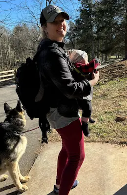

Home
About Me
Hi! I'm Shaundra — a creative at heart, lifelong artist, and busy mom of two sweet girls. I grew up on a farm, and that love for the outdoors has never left me. These days, I split my time between homeschooling, gardening, baking (yes, I sell baked goods too!), and chasing after my three dogs and a small flock of backyard chickens... and my own education!
Before becoming a full-time mom, I worked in kitchen and bath design, combining function and beauty for clients. Now I'm channeling that creative energy into a new passion: software development. I'm currently pursuing a degree in the field and loving the challenge of building and solving things in a whole new way.
When I get a moment to breathe, you'll usually find me outside — hiking, hunting, or just soaking in the quiet. Life is full, and I wouldn't have it any other way!
Student Photo
Web Certificate Courses
Total Credits